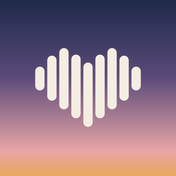

ROMANCE VISUAL NOVEL · ENGLISH LISTENING · IPHONE
心動英語
ときめき英語 · 설렘 영어
A fully voiced romance story for iPhone. You miss the last train, or you’re locked out, or your guesthouse is overbooked, and you spend the night until dawn with an American traveler. Along the way, you learn to hear how real American English sounds.
3
Episodes
Tokyo, Seoul and Bangkok. Each has two routes, so you choose who you meet, and three endings.
511
Linking explanations
Tap a marked phrase to see why the words run together and what they sound like.
1
Free chapter per episode
Play chapter 1 of every episode for free. There is no subscription.
How it works
- Every line is voiced in American English. Subtitles can be bilingual (English with a Traditional Chinese, Japanese or Korean translation), English only, or hidden for blind listening.
- Some choices are blind listening questions: you answer by what you heard.
- Shadowing: record yourself saying a line and play it back next to the original. Your recording stays on your iPhone.
- Collect sketch cards, save sentences, and export a PDF study sheet with a chapter’s lines, linking and phrases.
- No account, no ads and no tracking.
The first chapter of each episode is free. Each episode’s full story (chapters 2–6 and every ending) is a one-time purchase handled by Apple, and Tokyo and Seoul can also be bought together. Current prices appear in the app. There is no subscription.
Support
Contact craigtec.studio@gmail.com for app issues, subtitle or translation corrections, purchase questions or privacy requests.
Please include your app version, device model, the episode and chapter, and the steps that led to the issue. Screenshots are optional; remove personal information before sending them. Never send passwords, verification codes or full payment-card details.
Purchases and restoration
Open 設定 (Settings) → 解鎖完整故事／恢復購買 and tap 恢復購買 (Restore purchases), using the Apple Account that made the purchase. Apple manages payment and transaction records. Contact Apple for billing or refund requests.
Progress, recordings and the microphone
Progress, collected cards and saved sentences are stored only on your iPhone. To delete one episode’s progress, open 設定 → 清除這一集的進度 (Clear this episode’s progress) and tap it again to confirm. Your purchases and settings are kept.
Shadowing recordings are never saved as files; each one is replaced by the next. The app asks for microphone access the first time you record, and you can change it at any time in iOS Settings. See the privacy policy for details.
戀愛視覺小說 · 英文聽力 · IPHONE
心動英語 支援與產品說明
全程語音的戀愛故事。錯過末班車、被鎖在門外、民宿超賣，你和一位美國旅人一起等天亮，也慢慢聽懂真正的美式英文。
- 三集：東京、首爾、曼谷。每集兩條路線，你選要遇見誰，各有三種結局。
- 每句台詞都有美式英文配音。字幕可選雙語（英文加中文翻譯）、只有英文，或先不顯示字幕的盲聽模式。
- 511 個連音解說：點一下標記的片語，就知道單字為什麼連在一起、聽起來像什麼。
- 盲聽選擇：照你聽到的回答。
- 跟讀：錄下自己念的句子，和原句比對。錄音只留在手機上。
- 收集素描卡、收藏句子，還能把整章的台詞、連音和片語匯出成 PDF 講義。
- 不用註冊帳號，沒有廣告，也不追蹤。
每集第一章免費；第 2 到 6 章和所有結局以一次性購買解鎖，付款由 Apple 處理，東京和首爾也可以一起買。價格以 App 內顯示為準，沒有訂閱。
聯絡支援
App 問題、字幕或翻譯勘誤、購買或隱私疑問，請寄信至 craigtec.studio@gmail.com。請附上 App 版本、裝置型號、第幾集第幾章，以及發生問題前的步驟。截圖可自行選擇附上，寄送前請移除個人資訊；請勿提供密碼、驗證碼或完整付款卡資料。
購買、進度與錄音
恢復購買：到「設定 → 解鎖完整故事／恢復購買」點「恢復購買」，並使用當初購買的 Apple 帳號。付款、交易與退款由 Apple 處理。
進度、收藏卡和收藏句子只存在你的手機裡。要刪除某一集的進度，請到「設定 → 清除這一集的進度」，再按一次確認；已購買的內容和設定都會保留。跟讀錄音不會存成檔案，每次錄音都會取代上一次。第一次錄音時 App 會詢問麥克風權限，之後隨時可以在 iOS 設定中更改。詳情請見隱私權政策。
恋愛ノベル · 英語リスニング · IPHONE
ときめき英語 サポートと製品情報
フルボイスの恋愛ストーリー。終電を逃した夜、宿に入れなくなった夜、ゲストハウスがオーバーブッキングだった夜。アメリカから来た旅人と夜明けまで過ごすうちに、本物のアメリカ英語が聞こえてきます。
- 東京・ソウル・バンコクの3話。各話に2つのルート（誰と出会うかを選べます）と3つのエンディングがあります。
- すべてのセリフにアメリカ英語のボイス付き。字幕は二か国語（英語＋日本語訳）、英語のみ、字幕なしのブラインドリスニングから選べます。
- 511か所のリンキング解説：印のついたフレーズをタップすると、音がつながる理由と実際の聞こえ方がわかります。
- ブラインド選択：聞き取った内容で答えます。
- まねして言う（シャドーイング）：自分の声を録音して、お手本と聞き比べられます。録音は端末の中だけに残ります。
- スケッチカードを集めたり文を保存したりして、章ごとのセリフ・リンキング・フレーズをPDFの学習ノートに書き出せます。
- アカウント登録なし、広告なし、トラッキングなし。
各話の第1章は無料です。第2〜6章とすべてのエンディングは買い切りで解放でき、支払いはAppleが処理します。東京とソウルのセット購入もあります。価格はアプリ内の表示をご確認ください。サブスクリプションはありません。
お問い合わせ
アプリの不具合、字幕・翻訳の誤り、購入やプライバシーに関するご質問は craigtec.studio@gmail.com までメールでご連絡ください。アプリのバージョン、端末の機種、何話の何章か、問題が起きるまでの手順をお書き添えください。スクリーンショットは任意です。送信前に個人情報を消してください。パスワード、認証コード、カード番号の全桁は送らないでください。
購入・進行状況・録音
購入の復元は「設定 → フルストーリーを解放／購入を復元」で「購入を復元」をタップし、購入したときと同じApple アカウントをお使いください。支払い・取引・返金はAppleが管理しています。
進行状況、カード、保存した文はお使いのiPhoneの中だけに保存されます。あるエピソードの進行を消すには「設定 → このエピソードの進行を消去」をタップし、もう一度押して確定します。購入済みの内容と設定はそのまま残ります。録音はファイルとして保存されず、次の録音で置き換わります。初めて録音するときにマイクの使用許可を求めます。許可はiOSの設定でいつでも変更できます。詳しくはプライバシーポリシーをご覧ください。
로맨스 비주얼 노벨 · 영어 듣기 · IPHONE
설렘 영어 지원 및 제품 안내
풀보이스 로맨스 스토리. 막차를 놓친 밤, 숙소에 못 들어간 밤, 게스트하우스가 초과 예약된 밤. 미국에서 온 여행자와 새벽까지 함께하다 보면 진짜 미국 영어가 들리기 시작해요.
- 도쿄·서울·방콕 세 편. 에피소드마다 두 개의 루트(누구를 만날지 직접 골라요)와 세 가지 엔딩이 있어요.
- 모든 대사가 미국 영어 음성으로 나와요. 자막은 이중 언어(영어+한국어 번역), 영어만, 자막 없이 듣는 블라인드 모드 중에서 고를 수 있어요.
- 연음 해설 511개: 표시된 구절을 누르면 단어가 왜 이어져 들리는지, 실제로 어떻게 들리는지 알려 줘요.
- 블라인드 선택지: 들은 내용으로 답해요.
- 따라 말하기: 내 목소리를 녹음해 원래 문장과 비교해요. 녹음은 휴대폰 안에만 남아요.
- 스케치 카드를 모으고 문장을 저장해, 챕터의 대사·연음·표현을 PDF 학습 노트로 내보낼 수 있어요.
- 계정 가입 없음, 광고 없음, 추적 없음.
에피소드마다 1장은 무료예요. 2~6장과 모든 엔딩은 한 번 구매로 잠금 해제되며, 결제는 Apple이 처리해요. 도쿄와 서울을 함께 사는 세트도 있어요. 가격은 앱 안에서 확인해 주세요. 구독은 없어요.
문의하기
앱 오류, 자막·번역 오류, 구매나 개인정보 관련 문의는 craigtec.studio@gmail.com으로 이메일을 보내 주세요. 앱 버전, 기기 모델, 몇 화 몇 장인지, 문제가 생기기까지의 순서를 함께 적어 주세요. 스크린샷은 선택 사항이며, 보내기 전에 개인정보를 지워 주세요. 비밀번호, 인증 코드, 카드 번호 전체는 보내지 마세요.
구매·진행 상황·녹음
구매 복원은 「설정 → 전체 이야기 잠금 해제／구매 복원」에서 「구매 복원」을 누르고, 구매할 때 쓴 Apple 계정을 사용해 주세요. 결제, 거래, 환불은 Apple이 관리해요.
진행 상황, 수집 카드, 저장한 문장은 내 iPhone에만 저장돼요. 한 에피소드의 진행을 지우려면 「설정 → 이 에피소드 진행 삭제」를 누르고 한 번 더 눌러 확인하세요. 구매한 내용과 설정은 그대로 남아요. 녹음은 파일로 저장되지 않고 다음 녹음으로 바뀌어요. 처음 녹음할 때 마이크 권한을 요청하며, iOS 설정에서 언제든지 바꿀 수 있어요. 자세한 내용은 개인정보 처리방침을 확인해 주세요.